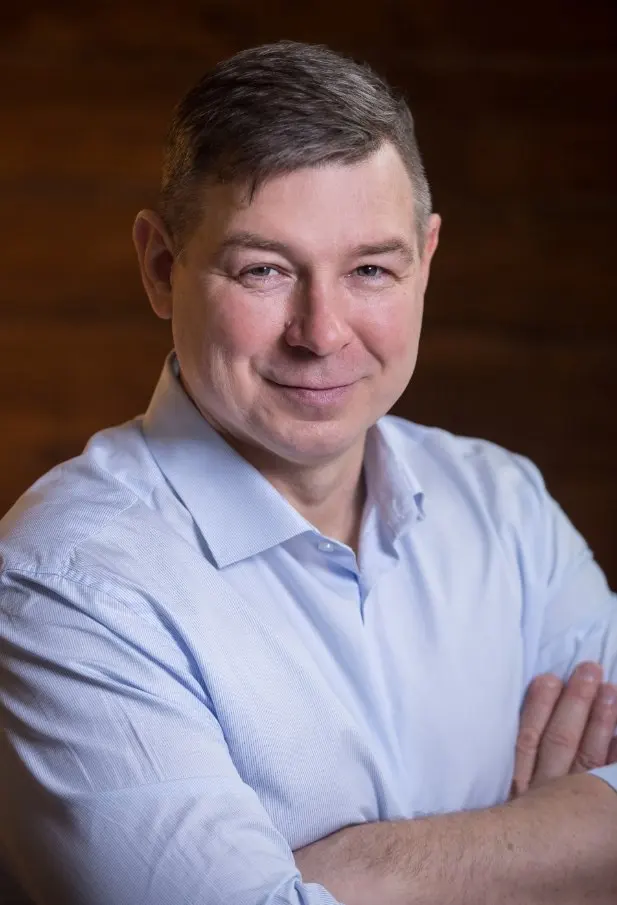

Індивідуальне навчання методу Бутейка
Коротко. Курс методу Бутейка — це 10 індивідуальних занять по 30–60 хвилин, 2–3 рази на тиждень, протягом одного місяця, у Zoom, Telegram або іншому зручному месенджері. Між заняттями — домашні завдання та регулярний зв’язок у чаті.

Індивідуальна програма навчання методу Бутейка з персональним супроводом, практичними заняттями та поступовим формуванням фізіологічного стереотипу дихання
Як проходить навчання
Навчання проходить індивідуально у Zoom, Telegram або іншому зручному месенджері.
Курс включає 10 індивідуальних занять тривалістю від 30 до 60 хвилин. Заняття проводяться 2–3 рази на тиждень, при цьому повний курс необхідно пройти протягом одного місяця.
Під час занять ми вивчаємо та практично відпрацьовуємо вправи за методом Бутейка. Між зустрічами учасник виконує домашні завдання та самостійно повторює освоєні вправи.
У процесі навчання контролюються:
- контрольна пауза та її динаміка;
- частота пульсу;
- навичка зменшення вентиляції та управління диханням;
- правильність виконання вправ;
- розуміння принципів методу;
- зміни самопочуття та динаміка симптомів.
Між заняттями підтримується регулярний зв’язок у чаті. Учасник надсилає короткі звіти про виконання практики, а я перевіряю їх і за потреби коригую роботу. Можна використовувати текстові та голосові повідомлення, а в разі необхідності — короткий відеозв’язок.
Програма має загальну структуру, але конкретні вправи, інтенсивність практики та темп навчання підбираються індивідуально.
Перше заняття
Перше заняття починається зі знайомства та оцінки вихідного стану. Ми обговорюємо самопочуття, спосіб життя, перенесені захворювання, індивідуальні особливості та проблеми, з якими людина прийшла на курс. Проводяться початкові вимірювання, зокрема контрольної паузи та частоти пульсу, оцінюються особливості дихання. Далі я пояснюю основні принципи методу Бутейка та проводжу першу практику. Уже на першому занятті учасник починає освоювати навичку зменшення вентиляції та більш фізіологічного дихання.
Перед початком курсу також обговорюються питання безпеки. Метод Бутейка не замінює медичної діагностики та лікування. Ми не призначаємо і не скасовуємо лікарські препарати та не змінюємо призначення лікаря. За наявності захворювань учасник продовжує підтримувати зв’язок зі своїм лікарем. За потреби питання участі в дихальних практиках слід попередньо узгодити з лікарем.
Матеріали курсу
Під час навчання учасник отримує додаткові матеріали, які допомагають краще зрозуміти метод і самостійно практикувати між заняттями. Матеріали надаються назавжди — у безстрокове користування.
До матеріалів курсу можуть входити:
- відеоуроки та записи практичних занять;
- таблиці для контролю показників;
- методичні матеріали;
- книги та додаткова література;
- описи вправ;
- матеріали з фізіології дихання;
- приклади та досвід інших учасників.
Матеріали використовуються як доповнення до індивідуальної роботи та допомагають сформувати навичку самостійної практики.
Результат навчання
Головна мета курсу — навчити людину самостійно користуватися методом Бутейка.
Після завершення навчання учасник повинен розуміти принципи методу, вміти правильно виконувати основні вправи, контролювати своє дихання та самостійно входити в практику зменшення вентиляції. Людина вчиться застосовувати метод для нормалізації дихального стереотипу, покращення загального самопочуття та, за можливості, зменшення вираженості окремих функціональних симптомів.
Особлива увага приділяється тому, щоб після завершення курсу учасник не залежав постійно від викладача, а міг грамотно та безпечно продовжувати практику самостійно.
Супровід під час і після курсу
Протягом усього індивідуального курсу учасник має регулярний зв’язок зі мною між заняттями.
У чаті можна надсилати короткі звіти, запитання, текстові та голосові повідомлення. За необхідності можливий додатковий короткий відеозв’язок. Під час проходження індивідуального курсу учасник також отримує безкоштовний доступ до регулярних групових практичних занять і навчальних програм, які проводяться в цей період.
Після завершення десяти основних занять, за необхідності, я продовжую безкоштовний супровід ще протягом 30 днів. У цей період можна ставити запитання, надсилати результати практики та отримувати рекомендації щодо подальшої самостійної роботи.
Важливо про метод і безпеку
Метод Бутейка я викладаю як систему дихальних практик, що може застосовуватися в межах оздоровчої практики та фізичної терапії.
Під час навчання ми працюємо з дихальним стереотипом, навичкою зменшення надлишкової вентиляції та самостійним виконанням дихальних вправ.
Метод Бутейка не замінює медичної діагностики та призначеного лікарем лікування.
Ми не призначаємо і не скасовуємо лікарські препарати та не змінюємо призначення лікаря.
За наявності хронічних захворювань або інших станів питання участі в дихальних практиках слід узгодити зі своїм лікарем.
Програма навчання
Програма складається з теоретичної та практичної частин. Теорія дає розуміння фізіологічних механізмів дихання та принципів методу Бутейка, а практична частина формує навичку самостійної роботи з диханням.
Теоретична частина
- основні принципи методу Бутейка;
- фізіологія дихання та газообміну;
- роль вуглекислого газу та кисню в регуляції дихання;
- поняття надлишкової вентиляції легень;
- механізми формування дихального стереотипу;
- контрольна пауза та її використання для оцінки дихання;
- частота пульсу та інші показники самоконтролю;
- глибокодихальна проба — гіпервентиляційна проба Бутейка;
- зв’язок дихання із фізичним навантаженням, розслабленням і загальним самопочуттям;
- принципи безпечної самостійної практики.
Практична частина
- визначення вихідних показників та індивідуальних особливостей дихання;
- освоєння навички зменшення вентиляції;
- формування більш фізіологічного дихального стереотипу;
- практики розслаблення та зменшення надлишкового дихального зусилля;
- виконання вправ методу Бутейка у спокої;
- поступове застосування навичок під час повсякденної активності та фізичного навантаження;
- контроль контрольної паузи, пульсу, самопочуття та динаміки симптомів;
- домашня практика між заняттями;
- перевірка техніки та індивідуальна корекція вправ;
- поступове ускладнення практики відповідно до стану та підготовленості;
- формування навички самостійного входження в практику;
- підготовка до самостійного використання методу після завершення курсу.
Програма має загальну послідовність, але конкретний обсяг теорії, вправи, інтенсивність та темп їх освоєння підбираються індивідуально.
Вартість навчання
Індивідуальний курс — 23000 грн.
Перед оплатою ознайомтеся з Публічним договором (офертою), Політикою конфіденційності та умовами повернення коштів. Здійснюючи оплату, ви підтверджуєте, що ознайомилися з цими документами та погоджуєтеся з їхніми умовами.
У вартість входять 10 індивідуальних занять, персональний супровід між зустрічами, навчальні матеріали, доступ до групових практик у період проходження курсу та, за необхідності, додатковий супровід протягом 30 днів після завершення основної програми.
Оплата приймається лише картками, емітованими банками України.
Якщо ваша картка випущена банком іншої країни, будь ласка, зв’яжіться з нами для отримання реквізитів для оплати: Контакти
Запис на консультацію
Перед початком навчання можна пройти попередню безкоштовну консультацію, під час якої ми обговоримо ваші цілі, формат роботи та можливість участі в програмі. Після натискання кнопки ви перейдете в Telegram. Напишіть слово «Консультація».
Якщо ви не користуєтеся Telegram, зв’язатися зі мною можна іншим зручним способом. Перейдіть на сторінку «Контакти» та оберіть відповідний варіант зв’язку.
Попередній запис на консультацію — безкоштовний. Після натискання кнопки ви перейдете в мій Telegram. Напишіть слово «Консультація», і я зв’яжуся з вами, щоб уточнити ваш запит та узгодити зручний час
Існує парадокс дихання, про який знають далеко не всі: якщо людина дихає надмірно глибоко і вентилює легені більше, ніж потрібно організму, це не обов’язково покращує доставку кисню до тканин.
Один із фізіологічних механізмів, пов’язаних із віддачею кисню гемоглобіном тканинам, описує ефект Бора.
Якщо ви хочете детальніше дізнатися про механізми дії методу Бутейка, його наукові основи, історію розвитку та застосування у світі, натисніть кнопку нижче.
Метод Бутейка: наукові основи, розвиток і застосування у світі